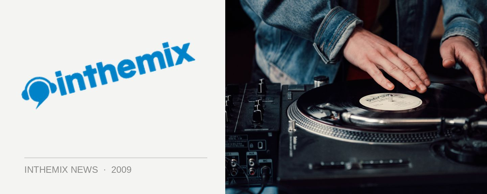

Future Entertainment talks The Likes of You
“The central idea is to push everything from that progressive, minimal and techno kind of world,” Brett Robinson from Future Entertainment told ITM this week, discussing his company’s The Likes of You brand. The parties have already have a strong foothold in the Melbourne scene after hosting marquee names like Richie Hawtin, Sven Vath and Carl Craig over the past year; but this weekend they’ll also be making the journey to Sydney, with Loco Dice and Hernan Cattaneo in tow. “It’s been important for us to start to try and carve an identity for a brand that people know delivers a good standard of that style of music; featuring quality production and the right kind of approach,” Robinson told ITM.
Future Entertainment say the decision was made to bring the brand to Sydney when they witnessed the incredible response to the acts who played in the ‘Likes of You’ tent at this year’s Future Music Festival. “When we had Etienne De Crecy, Richie Hawtin, Sander Kleinenberg and Stephan Bodzin in that tent, it was the response that we got and the type of people that we saw fill that tent,” Robinson said.
“We’ve obviously got a number of different arenas. We’ve got the main arena for the mass-market audience, we’ve got the Godskitchen area for the trance crew. The ‘Likes of You’ arena really appealed to the proggy/techy/minimal type crowd, and they came out in droves to support it. It was busy from start to finish, which was quite a surprise to me. And I thought, there’s definitely a very serious following for that kind of music here, and it’d be good to get something going on a more regular basis.”
It’s a dance brand that has already made some solid inroads into its hometown of Melbourne over the past few years, alongside other local crews like Darkbeat and Pretty Simple. “Obviously we’ve done a lot more shows under the Likes of You banner there. It’s definitely developed a pretty serious following now, to the point where there’s not a great deal of marketing required. There’s a pretty loyal following of people who have all got to know each other.”
Catch The Likes of You this weekend, with Hernan Cattaneo and Loco Dice:
Friday May 15th – Brown Alley, Melbourne
Saturday May 16th – The Metro, Sydney